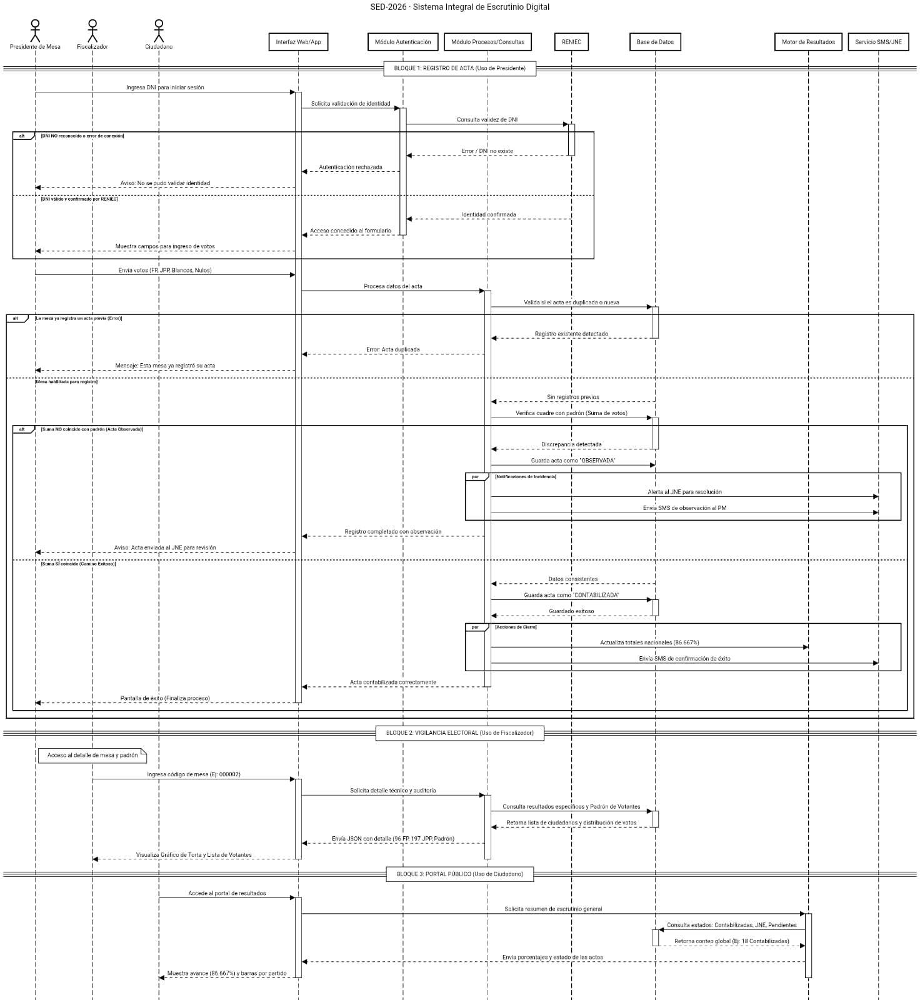
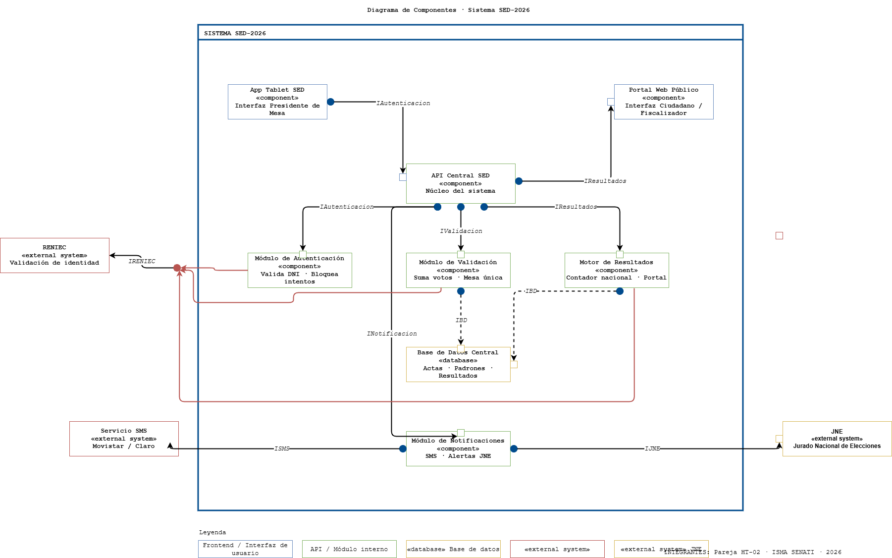

Análisis UML completo del sistema SED-2026 de la ONPE para la Segunda Vuelta del 7 de junio de 2026.
Tras las fallas del STAE en la primera vuelta del 12 de abril, la ONPE necesita un sistema rediseñado y robusto para procesar 86,488 mesas en tiempo real.
El sistema STAE tuvo fallas críticas durante la primera vuelta, extendiendo las votaciones hasta el lunes 13 de abril. La ONPE decidió eliminarlo y rediseñar desde cero.
Modelar el SED-2026: el sistema interno que recibe actas de mesas, valida los datos, los suma al total nacional y publica resultados oficiales en tiempo real.
Los stakeholders tienen interés en el sistema pero no lo usan directamente. Los actores sí interactúan con él.
| Actor / Stakeholder | Tipo | Rol en el sistema | Interacción |
|---|---|---|---|
| Presidente de Mesa | Actor interno | Registra el acta digitalmente al cierre del conteo | ✔ App Tablet SED |
| Fiscalizador de Partido | Actor interno | Consulta actas para vigilar el proceso electoral | ✔ Portal Público |
| Ciudadano | Actor interno | Consulta el porcentaje de avance y resultados | ✔ Portal Público |
| JNE | Actor interno | Recibe actas observadas para resolución | ✔ Alertas automáticas |
| RENIEC | Sistema externo | Valida la identidad del presidente de mesa | ✔ API consulta DNI |
| Servicio SMS | Sistema externo | Envía notificaciones al presidente de mesa | ✔ Movistar / Claro |
| ONPE (institución) | Stakeholder | Cliente del sistema, define reglas de negocio | — No es actor |
| Partidos Políticos | Stakeholder | Interesados en la transparencia del proceso | — No es actor |
6 actores, 10 casos de uso con relaciones «include» y «extend».
.png)
Exporta desde draw.io como PNG → assets/img/diagramas/casos-uso.png
| Actor Principal | Presidente de Mesa |
|---|---|
| Actores Secundarios | RENIEC, Servicio SMS, JNE |
| Precondiciones | Sesión iniciada; Mesa en estado "Cierre de Escrutinio". |
Flujo del caso "Registrar Acta" con bloque par para la Regla #4.
Al registrar el acta, en paralelo:
① Actualiza contador nacional
② Notifica al JNE si hay observación
③ Envía SMS al presidente de mesa

Exporta como PNG → assets/img/diagramas/secuencia.png
Swimlanes con 4 actores, 3 decisiones y fork-join para el paralelismo.

Exporta como PNG vertical → assets/img/diagramas/actividades.png
Tras validar el acta, bifurca en 3 acciones simultáneas: actualizar contador, alertar JNE y enviar SMS.
API Central como hub, 6 módulos internos, 3 sistemas externos con interfaces etiquetadas.

Exporta como PNG → assets/img/diagramas/componentes.png
Infraestructura AWS Lima, cluster de 3 servidores EC2, PostgreSQL Multi-AZ.

Exporta como PNG → assets/img/diagramas/despliegue.png
El 30% de la nota es coherencia. Los mismos elementos aparecen en todos los diagramas.
| Elemento | Casos de Uso | Secuencia | Actividades | Componentes | Despliegue |
|---|---|---|---|---|---|
| Presidente de Mesa | ✦ Actor | ✦ Actor | ✦ Swimlane | ✦ Usuario App | ✦ Tablet device |
| RENIEC | ✦ Externo | ✦ Objeto | ✦ Swimlane | ✦ «external» | ✦ Nodo externo |
| Registrar Acta | ✦ Caso de uso | ✦ Flujo principal | ✦ Flujo principal | ✦ IValidacion | ✦ validador.jar |
| Base de Datos | — | ✦ Objeto | ✦ Guardar acta | ✦ «database» | ✦ PostgreSQL RDS |
| Servicio SMS | ✦ Externo | ✦ Bloque par | ✦ Fork-join | ✦ «external» | ✦ Gateway SMS |
| JNE | ✦ Actor | ✦ Bloque par | ✦ Fork-join | ✦ «external» | ✦ Nodo externo |
El STAE falló. ¿Qué decisión arquitectónica en el SED-2026 evita que eso vuelva a ocurrir?
Arquitectura monolítica con punto único de fallo (SPOF). Al fallar un solo componente, todo el proceso electoral colapsó. 27 millones de electores dependían de un sistema sin redundancia.
La API Central distribuye la carga entre módulos independientes. Si el Módulo de Notificaciones falla, el registro continúa. Cluster EC2 de 3 instancias + PostgreSQL Multi-AZ eliminan el SPOF.
© 2026 · Jesús Romaldo Sulla Sacsi · Anthony Dorly Huilahuaña Chata
Metodologías Ágiles · ISMA SENATI · HT-02 · Sistema SED-2026